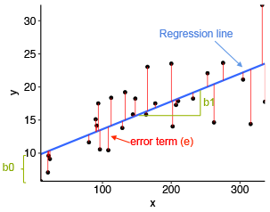

library(fixest)
Lesson Overview
In this lesson, we introduce the dominant way of measuring relationships between variables in statistics and the social sciences: the regression model. We discuss the simple linear regression model, and how we estimate relationships between variables with the Ordinary Least Squares estimator.
This lesson covers the following topics:
- The basic form of the simple linear regression model (bivariate regression).
- What fitted values are, and what they can help us learn.
- How we can interpret the fitted value coefficients as the relationships between two variables.
- How we can use simple linear regression to make predictions.
- How we can describe the goodness of fit with the R-squared metric.
1.4.1: The Simple Linear Regression Model
In 1.3.6, we established that we care about the magnitude of the relationship between two variables x and y. One way we can measure the magnitude is through the slope of a best-fit linear line.
- This is because the slope in a linear equation y=mx+b shows how much y changes for every on unit increase in x.
We can formalise this with the Linear Regression Model:
Definition: Simple Linear Regression
The simple linear regression model takes the following form.
y_i = \beta_0 + \beta_1 x_i + u_i
- Where we have n number of observations in our data, i being any one of them, and each observation has an x and y value (x_i, y_i).
- Where \beta_0 (intercept) and \beta_1 (slope) are coefficients of the model that need to be estimated (since they will differ in value between different samples and data).
- Where \beta_1 (slope) describes the association of x and y.
- Where u_i is the error term (see below for more details)
The simple linear regression model is also called the bivariate regression model, since there are two variables y and x.
You might notice an extra term at the end of the equation u_i. This is called the error term. Why does it exist?
- Well, not all of our data points (x_i, y_i) are going to be exactly on the straight line of best fit.
- The term u_i represents the distance (in terms of units of y) of that actual point from the best-fit line.
Mathematically, we can solve for the value of u_i for each observation of u_i by solving for it from the regression equation:
\begin{split} y_i & = \beta_0 + \beta_1x_i + u_i \\ - u_i & = -y_i + \beta_0 + \beta_1 x_i \\ u_i & = y_i - \beta_0 - \beta_1 x_i \end{split}
This might not be too intuitive. An easier way is to visualise it with a figure. Take the figure below - not all points are on the best-fit line. u_i represents the distance of points from the best fit line:

The error term, in social science terms, is the effect of anything else on y excluding x (which is already included in our linear equation).
For example, if x is age and y is income, you might have a relationship between the two variables as follows:
\text{income}_i = \beta_0 + \beta_1 \text{age}_i + u_i
However, this is not a perfect linear relationship - not all points will be on the best fit line.
- This is because there are other factors that affect y (income), including education, bargaining ability, location of work, and so on. It could also just be random variation - after all, some people’s incomes y are a result of just pure luck.
- Every other factor that affects y, but is not x, is encompassed in this error term u_i.
For the simple linear regression model, the average error u_i across all observations i, is 0. Mathematically, E(u_i) = 0. We will discuss this property (and others) in lesson 2.3.
1.4.2: Fitted Values and Best-Fit Lines
We have discussed the form a simple linear regression takes: y_i = \beta_0 + \beta_1 x_i + u_i.
However, that is not the best-fit line: we still need to estimate the coefficients \beta_0 (intercept) and \beta_1 (slope) as numbers in order to create a best-fit line.
- The estimates of \beta_0 and \beta_1 that we obtain will be denoted with a hat ^: \hat\beta_0 and \hat\beta_1.
- The estimates of \beta_0 and \beta_1 will vary depending on the data we have.
The question is, how do we do this? For example, which best-fit line is better below - red, orange, or blue?
To fit a best-fit line, we obviously want the line to fit the data well - i.e. have minimal errors compared to the actual data.
- What is an error? Recall that our original values of y from the data for any observation i are y_i.
- We also have predictions for the value of any observation from our best-fit line, labelled \hat y_i
- Thus naturally, the error is how far away our prediction \hat y_i is from the true observed value y_i. Thus, the error is y_i - \hat y_i.
One way we can fit an accurate line is to find the best-fit line that minimises the sum of squared errors (SSE).
Definition: Sum of Squared Errors
The sum of squared errors (SSE) is as follows:
SSE = \sum\limits_{i=1}^n (y_i - \hat y_i)^2
- The sum of squared errors is exactly as it sounds. Find the error, the distance between the actual y_i and predicted \hat y, which is y_i - \hat y, then square that error (y_i - \hat y_i)^2, then sum up for all observations i in the data.
More inuitively, the errors of a best-fit line are highlighted in red. We will square each error, then sum all the errors up, to get the sum of squared errors for that best-fit line:

We will discuss this estimation process, called the Ordinary Least Squared Estimator, in much more detail in lesson 2.2. Do not worry about the mathematics/mechanics behind it now.
Once we have obtained our estimates of the coefficients that minimise the sum of squared errors, we will have a best-fit line, also called a fitted-values model.
Definition: Fitted Values
The fitted values are obtained after estimating \beta_0 and \beta_1. The equation takes the following form:
\hat{y}_i = \hat\beta_0 + \hat\beta_1x_i
- Where \hat{y} are the predicted values of y based on our best-fit line.
- Where \hat\beta_0 and \hat\beta_1 are our estimates for the true coefficients \beta_0 and \beta_1.
- Note that the error term u_i disappears. This is because the average value of u_i is E(u_i) = 0, so we do not need to include the term.
For example, take our earlier example of x being age, and y being income. Our fitted values would be:
\widehat{\text{income}}_i = \hat\beta_0 + \hat\beta_1\text{age}_i
Where \widehat{\text{income}} are the predicted values of income, given any individual’s age.
Where \hat\beta_0 and \hat\beta_1 are estimates for the true \beta_0 (intercept) and \beta_1 (slope).
What do the fitted values allow us to do? Why are the fitted values useful?
- Interpret the relationship between x and y.
- Predict values of y for an observation, given a value of x.
We will explore these two uses in the next few sections.
1.4.3: Interpretation and Standardisation
We now have a fitted-values model, with estimates \hat\beta_0 and \hat\beta_1. But what do these actually mean in the context of the relationship between x and y?
Warning!
Note that the following interpretations only applies to continuous x variables and continuous/ordinal y variables. We will discuss interpretation with other variables in lesson 1.6.
Interpretation of \hat\beta_1
We know that in a linear fitted-values model, \hat y_i = \hat\beta_0 + \hat\beta_1 x_i, the coefficient \beta_1 is the slope. We know by the definition of slope, the slope is the change in y given a one unit increase in x.
Using this knowledge, we can interpret estimate \hat\beta_1.
Interpretation of \hat\beta_1
When x increases by one unit, there is an expected \hat{\beta}_1 unit change in y.
Warning!
Note how I have been using the word relationship, not causal effect.
Causality is not established through estimators, it is established through a strong experimental design (which we will cover in part II of the course).
Note: the “accuracy” of the estimate of \hat\beta_1 can vary based on if a number of assumptions are met. We will discuss this more advanced topic in lesson 2.3.
Interpretation of \hat\beta_0
We know that in a linear fitted-values model, \hat y_i = \hat\beta_0 + \hat\beta_1 x_i, the coefficient \beta_0 is the y-intercept. The y-intercept, by definition, is the value of y given x=0.
We can prove this mathematically by plugging in x_i = 0 into our fitted values equation:
\begin{split} \hat y_{i, \ x_i = 0} & = \hat\beta_0 + \hat\beta_1 x_i \\ & = \hat\beta_0 + \hat\beta_1(0) \\ & = \hat\beta_0 \end{split}
Thus, knowing this, we can interpret \hat\beta_0.
Interpretation of \hat\beta_0
When x=0, the expected value of y is \hat{\beta}_0
Standardising \beta_1 in Terms of Standard Deviations
Sometimes, it is hard to understand what changes in y and x mean in terms of units. For example, if we are measuring “democracy”, what does a 5 unit change in democracy mean? Is that a lot?
We can add more relevant detail by expressing the change of y and x in standard deviations.
How do we calculate this? Well, let us solve for the change in \hat{y}_i/\sigma_y given x_i = x and x = x + \sigma_X. This will tell us how much \hat{y} changes by given a increase of one standard deviation in x:
\begin{split} \frac{\hat y_{i, \ x_i = x + \sigma_x}}{\sigma_y} - \frac{\hat y_{i, \ x_i = x}}{\sigma_y} & = \frac{\hat\beta_0 + \hat\beta_1 x_i}{\sigma_y} - \frac{\hat\beta_0 + \hat\beta_1 x_i}{\sigma_y} \\ & = \frac{\hat\beta_0 + \hat\beta_1 (x+\sigma_x) - (\hat\beta_0 + \hat\beta_1 (x))}{\sigma_y} \\ & = \frac{\hat\beta_0 - \hat\beta_0 + \hat\beta_1x - \hat\beta_1x+\hat\beta_1\sigma_x}{\sigma_y} \\ & = \frac{\hat\beta_1 \sigma_x}{\sigma_y} \end{split}
Interpretation in Terms of Standard Deviation
For a one-std. deviation increase in x, there is an expected \hat{\beta}_1 \sigma_x / \sigma_y-std. deviation change in Y.
Warning!
Note how I have been using the word relationship, not causal effect.
Causality is not established through estimators, it is established through a strong experimental design (which we will cover in part II of the course).
1.4.4: Standard Errors and Confidence Intervals
Warning!
This section requires a strong understanding of topics covered in lesson 1.2.
In 1.2.3, we discussed the idea of uncertainty relating to estimates from samples.
The same principle applies to linear regression. Our estimate \hat\beta_1 is calculated from our sample of data, while there is some true \beta_1 in the population that we are trying to estimate.
Example: Income and Education
Let us define our outcome variable y as income, and our explanatory variable x as education.
The relationship between x (education) and y (income) of all people in the world in \beta_1.
However, we only have a small sample of people from the world, not the whole population. We use our sample to calculate our sample estimate \hat\beta_1.
Just like explained in 1.2.3, if we take another sample, and estimate another \hat\beta_1, we will get a slightly different estimate, since our sample differs.
Thus, we need some way to account for the uncertainty of getting different estimates between different samples.
Like we discussed in 1.2.3, the way to account for this uncertainty between different sample estimates is sampling distributions.
A quick refresher: A sampling distribution is the probability distribution of getting a certain specific sample estimate value of \hat\beta_1. We create a sampling distribution by “hypothetically” taking sample after sample, calculating \hat\beta_1 for each sample, and plotting it in a density plot.
By central limit theorem (see 1.2.4), we know that our sampling distribution is normally distributed.
The standard error of our estimate \hat\beta_1, notated \widehat{se}(\hat\beta_1) is the standard deviation of the sampling distribution.
- For now, we will just allow the computer to calculate the standard error. However, later in Part II of the course (in lesson 2.4), we will mathematically derive these standard errors.
With our standard error \widehat{se}(\hat\beta_1), we can now create a confidence interval (see 1.2.7 for intuition).
Just like previously discussed in 1.2.7, the 95% confidence interval for our estimate of \hat\beta_1 has the bounds:
\hat\beta_1 - 1.96 \widehat{se}(\hat\beta_1), \ \hat\beta_1 + 1.96 \widehat{se}(\hat\beta_1)
Interpretation of Confidence Intervals
The confidence interval means that under repeated sampling and estimating \hat\beta_1, 95% of the confidence intervals we construct will include the true \beta_1 value in the population.
Interpretation Warning!
It is very important to note that confidence intervals do not mean a 95% probability that the true \beta_1 is within any specific confidence interval we calculated.
We cannot know based on one confidence interval, whether it covers or does not cover the true \beta_1.
The correct interpretation is that over many samples from the same population, we would expect 95% of our confidence intervals to contain the true \beta_1 value.
1.4.5: Hypothesis Testing
Hypothesis testing follows the same procedure as outlined in 1.2.5 and 1.2.6. Reread these sections to understand the intuition.
In regression, our typical null hypotheses is that there is no relationship between x and y, and our alternate hypothesis is that there is a relationship between x and y. Thus, our hypotheses are:
\begin{split} & H_0 : \beta_j = 0 \\ & H_1: \beta_j ≠ 0 \end{split}
Now, we calculate a t-test statistic:
t = \frac{\hat\beta_j - 0}{\widehat{se}(\hat\beta_j)}
- Where the 0 represents the null hypothesis value. If you have any other null hypothesis value, change the 0 to your hypothesis value.
Now, we will consult a t-distribution (not a normal distribution) to calculate the p-values.
- We use a t-distribution, not a normal distribution, even if we have met the central limit theorem. The reason we do this is a little complicated, and will be explained later in lesson 2.4.
We start from the middle of the t-distribution, and move t-test statistic number of standard deviations from both sides of the middle.
Then, we find the probability of getting a t-test statistic even further from the middle than the one we got. The area highlighted in the figure below showcases that. In the figure, the t-test statistic is 2.228.

The area highlighted is the p-value. Once we have obtained our p-values from the t-distribution, we can interpret the p-values as follows:
Interpretation of p-Values for Regression
The p-value is the probability of getting a test statistic equally or more extreme than the one we got with our sample estimate \hat\beta_j, given the null hypothesis is true.
If p<0.05, we believe the probability of the null hypothesis is low enough, such that we reject the null hypothesis (that there is no relationship between x_j and y), and conclude our alternate hypothesis (that there is a relationship between x_j and y).
If p>0.05, we cannot reject the null hypothesis, and cannot reject that there is no relationship between x_j and y.
Warning!
Note how I have been using the word relationship, not causal effect.
Causality is not established through estimators, it is established through a strong experimental design (which we will cover in part II of the course).
1.4.6: Regression Goodness-of-Fit Statistics
We have fit a regression model with our estimates \hat\beta_0 and \hat\beta_1. But how good is our regression model? We can use two main summary statistics to figure this out:
Residual Standard Deviation
One way to summarise our fit is by considering our residuals/errors.
Residuals are the difference between our actual sample data y_i, and our predicted value for that same observation \hat y_i.
Logically, if our regression model fits the true data well, we should expect low differences between the actual y_i and the predicted \hat y_i.
Definition: Residuals
Residuals \hat u are the error of our predictions for our observed sample data. Essentially, they are the real y_i value in our sample, minus the predicted \hat y_i for the same observation. Mathematically:
\hat u_i = y_i - \hat y_i
Note: residuals are not the same as the error term u. We will not focus on this difference now, but it is discussed in lessons 2.3 and 2.4.
For each observation i, we have a different residual \hat u_i. We can plot the frequency of each error \hat u_i into a distribution - which indicates how frequently we get different values of error \hat u_i.
- And since \hat u_i is the error/residual, the distribution of \hat u_i tells us the probability of different sizes of errors (probability of being how far away from the true value y_i in the data).
Since \hat u_i is a distribution, we can measure its variance \hat\sigma^2, and its standard deviation \hat\sigma.
\begin{split} & \hat\sigma^2 = Var(u_i) \\ & \sigma = \sqrt{Var(u_i)} \end{split}
This is a little difficult to understand. But consider the figure below - the vertical distributions are the distribution of the residual \hat u_i. They represent how likely we are to get a certain error. Higher variance means this distribution is more spread out, and lower variance means this distribution is less spread out.
Naturally, the better fit our regression is, the smaller the variance of residuals should be.
R-Squared
The R-squared statistic is another statistic commonly used when interpreting the fit of regressions.
Definition: R-Squared
R-Squared measures the proportion of variation in y, that is explained by our regression model with x.
R-squared is always between 0 and 1.
Higher values indicates that our regression model with x explains a large proportion of the variation in y, which is good.
Lower values indicates that our regression model with x explains a small proportion of the variation in y, which is not as good.
However, it is important to not be overly concerned with R-squared, as there are several reasons why it can be a misleading metric.
In simple linear regression, R-squared is equal to the square of the correlation coefficient between x and y:
R^2 = r^2 = (Cor(x,y))^2
There is also another way to mathematically derive R-squared (which makes more intuitive sense based on its definition). We will do this derivation later in lesson 2.2.
- This other derivation is also more generalisable to more explanatory variables (a little bit of foreshadowing for the next lesson).
1.4.7: Prediction with Regression
So far, we have focused on \hat\beta_1 as a way to interpret the relationship between x and y. However, the simple linear regression model has another use prediction.
Recall our fitted values equation from earlier:
\hat y_i = \hat\beta_0 + \hat\beta_1 x_i
We input some value of x_i, and we will get a predicted value \hat y_i.
The best way to really illustrate this is with an example. Let us say that our outcome variable y is income, and our explanatory variable x is years of education. We will get a regression model like this:
\text{income}_i = \beta_0 + \beta_1 \text{education}_i + u_i
Our fitted values equation will take the form of:
\widehat{\text{income}}_i = \hat\beta_0 + \hat\beta_1 \text{education}_i
For simplicity, let us say that our estimate calculates \hat\beta_0 = 20000, and \hat\beta_1 = 3000. Now, our fitted values equation will be:
\widehat{\text{income}}_i = 20000 + 3000 \ \text{education}_i
Using this fitted value equation, we can plug in any education level, and get the predicted income for that education level.
For example, what would we predict someone with 10 years of education to have as an income? Let us plug in 10 for education into our fitted values:
\begin{split} \widehat{\text{income}}_i & = 20000 + 3000 \ \text{education}_i \\ \widehat{\text{income}}_i & = 20000 + 3000 (10) \\ \widehat{\text{income}}_i & = 20000 + 30000 \\ \widehat{\text{income}}_i & = 50000 \end{split}
- Thus, someone with 10 years of education has a predicted income of 50000.
We can do this for any value of education (or any x variable): just plug in x into the fitted values equation, and you will get a prediction of y.
Remember in the past few sections, how we discussed statistical inference with \hat\beta_1, and how in different samples, the value of \hat\beta_1 will change?
Well, what implication does this have on our prediction task? After all, if \hat\beta_1 (and \hat\beta_0) change in different samples, our estimates will also change in different samples.
To address this, we can also create confidence intervals for predictions.
The variance of the residuals \hat u_i, Var(\hat u_i), is what we are interested in (discussed in the previous section). The standard deviation of the residuals is just the square root of variance. Let us call this sd(\hat u_i).
Using this concept, we can create 95% confidence intervals for our predictions \hat y_i (just like for estimates of \hat\beta_1).
\hat y_i - 1.96 \ sd(\hat u_i), \ \ \hat y_i + 1.96 \ sd(\hat u_i)
Implementation in R
Regression Estimation
To estimate a regression, we can use the feols() function from the package fixest.
For the feols() function, we will need the fixest package. Make sure to install it if you have not previously (see appendix B.1).
Syntax:
For the feols() function, the syntax is as follows:
model <- feols(y ~ x, data = mydata, se = "hetero")
summary(model)- Replace model with any name you want to store your regression model in.
- Replace y with your outcome variable name, and x with your explanatory variable name.
- Replace mydata with the name of your dataframe.
The se = “hetero” tells R to use heteroscedasticity-robust standard errors (which we will discuss later in lesson 2.4).
- Just know it is standard to use robust standard errors nowadays.
Note: you can also use the lm() function with the same syntax, excluding the se = “hetero” section. However, this will not include robust standard errors.
Example:
Let us run a regression with outcome variable immatt (attitude towards immigrants), explanatory variable age, from the dataframe called dta:
my_model <- feols(immatt ~ age, data = dta)
summary(my_model)OLS estimation, Dep. Var.: immatt
Observations: 33,706
Standard-errors: IID
Estimate Std. Error t value Pr(>|t|)
(Intercept) 0.477238 0.015811 30.1830 < 2.2e-16 ***
age -0.008401 0.000291 -28.8857 < 2.2e-16 ***
---
Signif. codes: 0 '***' 0.001 '**' 0.01 '*' 0.05 '.' 0.1 ' ' 1
RMSE: 0.961932 Adj. R2: 0.024129We can see our output:
- In the estimate column, we get our intercept estimate \hat\beta_0, and our explanatory variable coefficient estimate \hat\beta_1.
- In the standard error column, we can see R calculates the standard errors for us.
- In the t-value column, we can see R calculates the t-test statistic for us.
- In the p-value column, we can see R calculates the p-value for us, and puts stars * if the coefficient is statistically significant.
Confidence Intervals
To create confidence intervals for our coefficients, we can use the confint() function.
- Note: you must fit a regression model before doing this, see above.
confint(model)- Replace model with the variable name that you stored your regression model to.
Example:
Let us find the confidence intervals for the regression we fit above:
confint(my_model) 2.5 % 97.5 %
(Intercept) 0.44624702 0.508229133
age -0.00897118 -0.007831067We can see that R outputs the lower and upper bound of our confidence intervals for our coefficients.
Prediction
For prediction, we can use the predict() function. You must fit a regression model before doing this, and also must have new x values in which you want to predict.
# predict
predictions <- predict(model, newdata = x_values)
predictions- Replace predictions with any variable name in which to store your predictions.
- Replace model with your regression model variable name that you fit earlier.
- Replace x_values with any vector of x-values you want to predict.
The final predictions prints out our predictions.
Example:
Let us use the previous regression example, with outcome variable immatt (attitude towards immigrants), explanatory variable age.
Let us say I want to predict the immigration attitude of a 20 and a 60 year old. I will first create a vector with these 2 x values:
x_values <- c(20, 60) # my 2 x values for prediction
x_values <- data.frame(x_values) # change into dataframe
colnames(x_values) <- "age" # specify values are for variable ageNow, let us predict:
my_prediction <- predict(my_model, newdata = x_values)
my_prediction[1] 0.30921560 -0.02682934We can see that our output includes predictions.
Plotting Relationships Graphically
We can plot relationships between two variables using a scatterplot. For this, we will need the tidyverse package. Make sure to install it if you have not previously (google how to install R-packages if needed).
library(tidyverse)Syntax:
We can create scatterplots with the ggplot() function as follows:
ggplot(mydata, aes(x = x_variable, y = y_variable)) +
geom_point() +
geom_smooth(method = lm)- Replace mydata with the name of your dataframe that contains your variables.
- Replace x_variable with the name of the variable you want displayed on the x axis.
- Replace y_variable with the name of the variable you want displayed on the y axis.
Note: the geom_point() part plots the points on the scatterplot, and the geom_smooth() part plots the best-fit line (OLS estimation).
- The method = lm within the geom_smooth() tells us to use OLS estimation in the best-fit line.
Example:
Let us do a scatterplot on the variable age and the variable immatt (immigration attitude), both variables being contained in the dataframe named dta:
- I added theme_bw(), which is a theme in ggplot (see appendix B).
- I added the argument size=0, as this allows us to control for the size of the dots.
ggplot(dta, aes(x = age, y = immatt)) +
geom_point(size = 0) +
geom_smooth(method = lm) +
theme_bw()`geom_smooth()` using formula = 'y ~ x'
Obviously, there are way too many observations in this scatterplot, but this will look nicer for a plot with less observations.